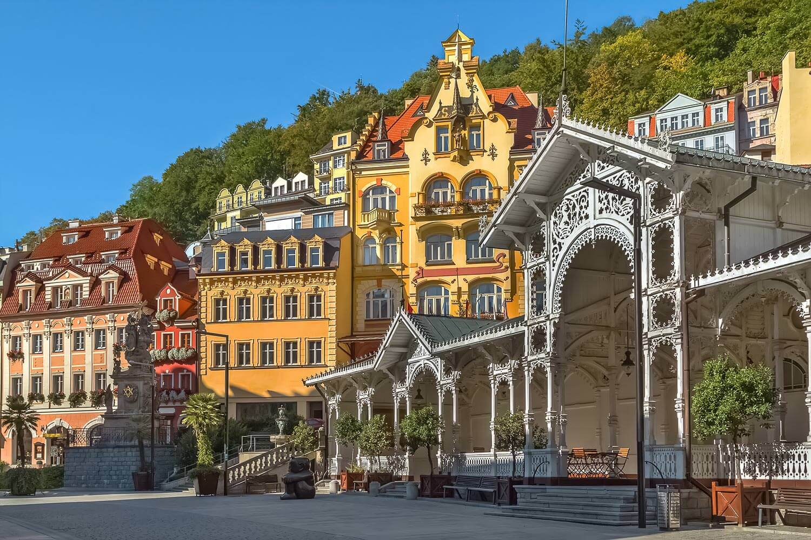
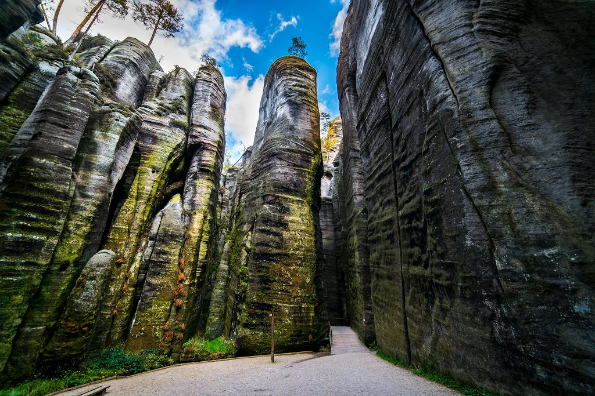
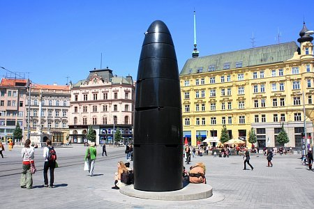
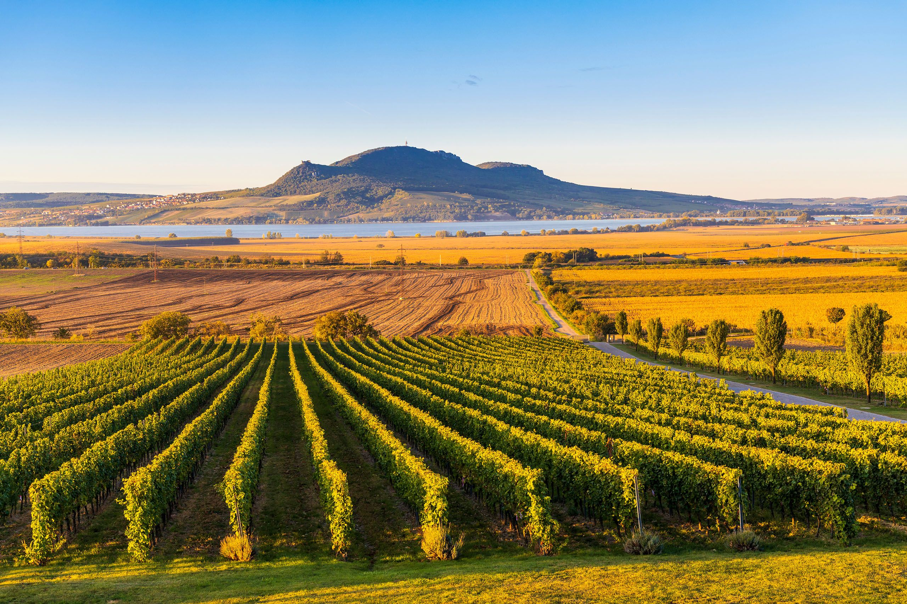
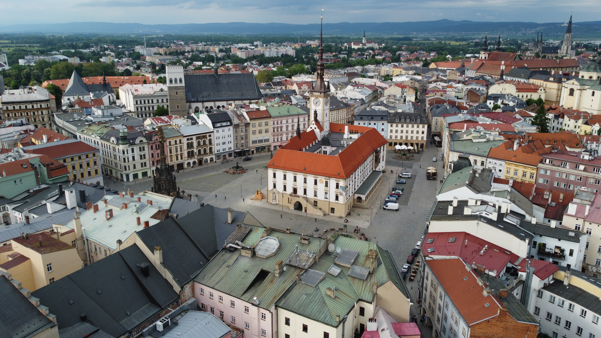
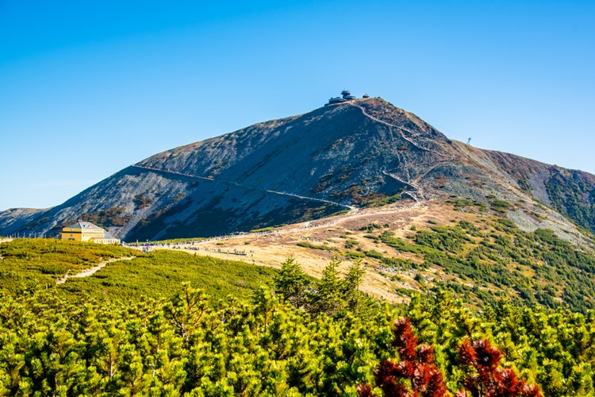
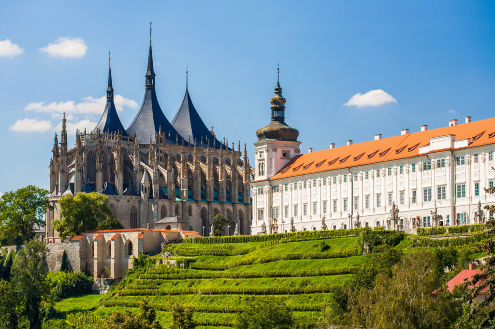

Český Krumlov
A historic town in South Bohemia, famous for its castle, winding streets and beatiful location on the Vltava River.
Discover Český KrumlovDiscover historic towns, dramatic landscapes and unforgettable places across Czechia.
A historic town in South Bohemia, famous for its castle, winding streets and beatiful location on the Vltava River.
Discover Český Krumlov
A famous spa town known for its elegant architecture, mineral springs and beatiful valleysurrounded by forests.
Discover Karlovy Vary
A spectacular landscape of sandstone rock formations, narrow paths and forests in the northeast of Czechia.
Discover Adršpach
A beatiful national park known for sandstone cliffs, forests, viewpoints and the Pravčická Gate.
Discover Czech Switzerland
A medieval castle near Prague, built by Charles IV and surrounded by the forests and hills of Central Bohemia
Discover Karlštejn
Czechia's second largest city, known for its lively atmosphere, historic architecture and unique underground tunnels.
Discover Brno
A scenic landscape in South Moravia, famous for vineyards, limestone hills, historic ruins and views across the countryside.
Discover Pálava
A historic city in Moravia, known for its beatiful squares, fountains, old town and the UNESCO-listed Holy Trinity Column.
Discover Olomouc
The highest mountain range in Czechia, offering mountain trails, forests, valleys and spectacular views ine every season.
Discover Krkonoše
A historic town in Central Bohemia, famous for its medieval architecture, silver-mining history and the impressive St. Barbora's Church.
Disover Kutná Hora